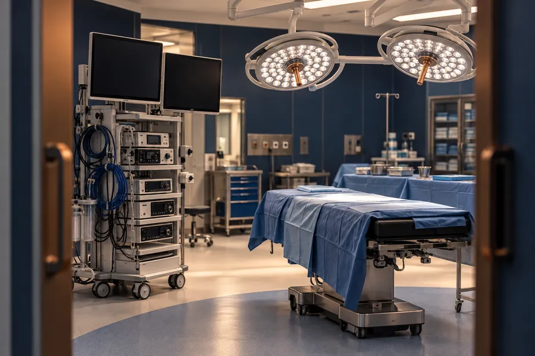
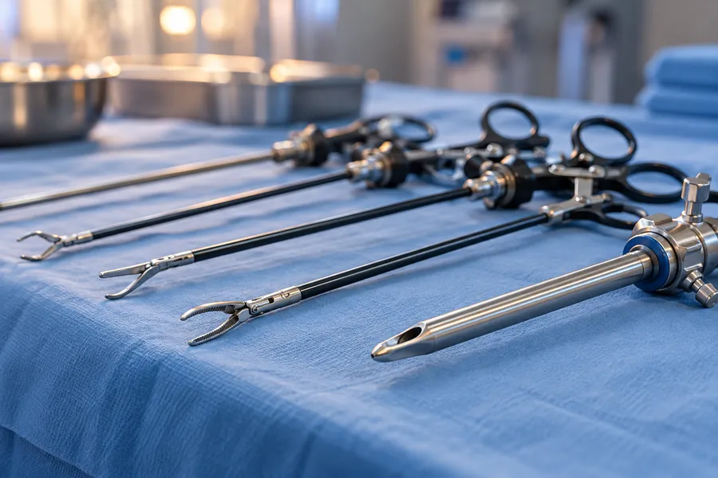

¿Necesitas cirugía?
La consulta sirve para revisar el diagnóstico y tus estudios antes de decidir el tratamiento.

Cirugía general · Gastrointestinal · Mínima invasión
¿Tienes un problema de vesícula, una hernia o reflujo? Consulta con la Dra. Mariana Barragán en Hospital Ángeles Universidad. Si ya tienes estudios, llévalos a tu cita.
Sobre la doctora
Cirugía general y gastrointestinal
Opera principalmente por laparoscopía, una técnica de mínima invasión.
Estudió medicina en la Universidad La Salle y cursó la especialidad en la UNAM. Cuenta con certificación vigente del consejo de su especialidad. Su consultorio está en Hospital Ángeles Universidad, al sur de la Ciudad de México.
Presentación personal pendiente de la doctora.
Puedes escribirle directamente a la doctora por WhatsApp para agendar.
Hospital Ángeles Universidad · Benito Juárez, CDMX
Cirugía de mínima invasión
La doctora opera principalmente por laparoscopía. Se utilizan una cámara e instrumentos delgados a través de pequeñas incisiones. En consulta se decide si esta técnica es adecuada para tu cirugía.
La consulta sirve para revisar el diagnóstico y tus estudios antes de decidir el tratamiento.
La doctora también opera con robot en algunos casos. Si tienes seguro, confirma con tu aseguradora si tu póliza cubre esta técnica antes de programar.
Puedes preguntar cómo se realiza la cirugía, qué preparación necesitas y cómo sería la recuperación en tu caso.
Texto por validar con la doctora.
Antes de programar tu cirugía
Coméntalo al agendar. La cobertura de la consulta o la cirugía depende de tu póliza; confírmala con tu aseguradora antes de programar.
Consultar sobre mi seguroCada aseguradora tiene sus requisitos y tiempos. Información general, por validar con la doctora.Pregunta a tu aseguradora si cubre el padecimiento y si ya cumpliste el periodo de espera que corresponda.
Si la doctora indica cirugía, pregunta qué informe médico, estudios y documentos pide tu aseguradora.
Si la aseguradora autoriza la cirugía, revisa qué cubre y qué te toca pagar, como el deducible y el coaseguro.
Confirma los requisitos del hospital y la vigencia de la autorización, si tu aseguradora la requiere.
Galería de demostración
Fotografías reales pendientes.
Imágenes de demostración generadas con IA. No muestran a la doctora, a su equipo ni sus instalaciones; se sustituirán por sus fotografías.

Quirófano y torre de laparoscopíaDemostración · generada con IA
Instrumental de mínima invasiónDemostración · generada con IAAntes de tu visita
Al agendar, pregunta si necesitas alguna preparación para la consulta.
Agendar por WhatsAppEscribe por WhatsApp para consultar horarios y pedir tu cita. También puedes llamar al 55 4351 4313.
Si tienes análisis o estudios recientes, llévalos. Anota también los medicamentos que tomas.
Anota cuándo empezaron tus molestias y lo que quieras preguntarle a la doctora.
En Hospital Ángeles Universidad, Av. Universidad 1080, Xoco, Benito Juárez, C.P. 03330, Ciudad de México. Confirma el número de consultorio al solicitar tu cita.
Puedes escribir por WhatsApp o llamar al 55 4351 4313. También puedes escribir a mariana.bp19@gmail.com para solicitar una cita.
Lleva los estudios que tengas y una lista de los medicamentos que tomas. Al agendar, pregunta si necesitas alguna preparación.
Menciona tu aseguradora al agendar y confirma con ella las condiciones de tu póliza. Tener seguro no garantiza que cubra la consulta o una cirugía.
Para saberlo hace falta una valoración médica. Usa WhatsApp para pedir tu cita. La información de esta página no sustituye una consulta. Este sitio no ofrece atención de urgencias.
En la laparoscopía se usan una cámara e instrumentos que entran por pequeñas incisiones. La doctora revisa en consulta si esta técnica es adecuada para tu cirugía.
Es el tiempo que debe pasar desde el inicio de la póliza para que pueda cubrir ciertos padecimientos. Las condiciones varían: revisa tu póliza o consulta a tu aseguradora.
Consulta a tu aseguradora si tu póliza permite el reembolso cuando te atiende un médico fuera de su red. Antes de pagar, confirma los requisitos y el monto que podría reembolsarte.
Depende de tu póliza. Confirma la cobertura con tu aseguradora antes de programar la cirugía.
Consultorio en CDMX
Citas y contacto
El WhatsApp lo contesta la doctora. Escríbele para consultar horarios y agendar en Hospital Ángeles Universidad.